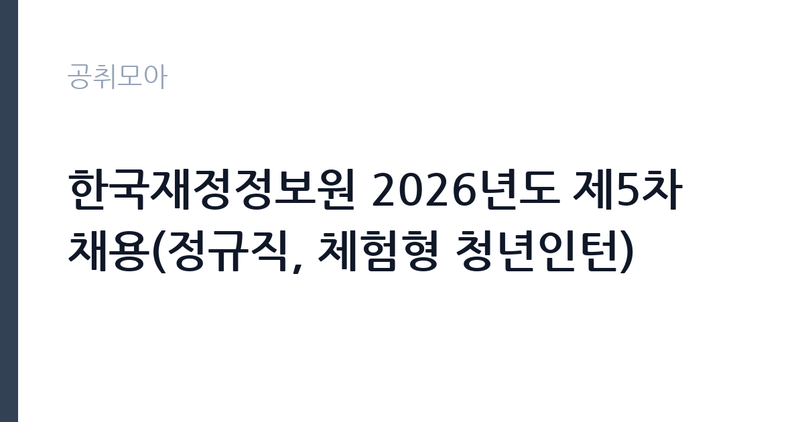

[공공기관] 한국재정정보원 2026년도 제5차 채용(정규직, 체험형 청년인턴)
한국재정정보원 · 서울 · 마감 2026-11-02 (D-16) · 출처 잡알리오

한눈에 보는 모집 조건
| 기관 | 한국재정정보원 |
|---|---|
| 공고명 | 한국재정정보원 2026년도 제5차 채용(정규직, 체험형 청년인턴) |
| 고용형태 | 청년인턴(체험형) |
| 근무지 | 서울 |
| 게시일 | 2026-10-16 |
| 마감일 | 2026-11-02 (D-16) |
지원자격, 이렇게 읽으세요
- 공공기관 채용공시
- 세부 조건은 원문 공고문 확인
공통 자격은 임용일 즉시 근무 가능, 정년 만 60세 이하, 병역법상 병역의무 이행, 인사규정상 결격사유와 직권면직 사유가 없을 것으로 제시되어 있습니다. 중요한 제한이 하나 있습니다. 분야별 중복지원이 불가능하고 중복지원이 확인되면 즉시 불합격 처리됩니다. 관심 분야를 하나로 정해 지원해야 하며, 분야별 세부 응시자격은 첨부 공고문에서 확인해야 합니다.
이 공고의 포인트
한국재정정보원은 기획재정부 산하 기관으로 국가 재정 정보시스템을 운영하고 재정 데이터를 제공합니다. 디지털예산회계시스템과 열린재정 서비스가 대표적인 사업입니다. 이 공고의 장점은 정규직과 체험형 청년인턴을 동시에 뽑는다는 점으로, 경력이 짧은 지원자는 인턴으로 시작해 조직을 경험할 수 있습니다. 재정 데이터와 시스템 운영 경력은 공공 부문에서 활용도가 높습니다.
전형은 어떻게 진행되나
서류전형에서 자격 요건과 직무 적합성을 확인하고, 필기나 인성검사, 면접전형을 조합해 최종합격자를 선발하는 구조가 일반적입니다. 분야별 전형 방식이 다를 수 있어 지원 분야의 공고문을 따로 읽어야 합니다. 서류 합격자에게는 추가 제출서류 안내가 이뤄지고, 최종합격자는 신원 확인 후 임용됩니다. 일정은 재정정보원 채용 페이지 공지로 안내됩니다.
원문에서 확인한 전형 방식
<공통자격> - 임용일부터 즉시 근무가 가능한 자 - 접수 마감일 기준, 한국재정정보원 「인사규정」 제59조에 따른 정년(만60세)을 초과한 자는 지원 불가 - 「병역법」 제76조에서 정한 병역의무 불이행 사실이 없는 자 - 한국재정정보원 「인사규정」 제13조에 따른 결격사유에 해당하지 않는 자 - 한국재정정보원 「인사규정」 제55조에 따른 직권면직 사유에 해당하지 않는 자 - 전 분야별 중복지원 불가(중복지원 확인 시 즉시 불합격 처리) * 분야별 응시자격 등 자세한 사항은 첨부파일의 채용공고문을 참조
이런 분께 추천해요
- 재정·회계·데이터 분야로 공공기관 정규직을 노리는 지원자
- 정보시스템 운영과 데이터 분석 역량을 쌓으려는 사람
- 청년인턴으로 공공기관 업무를 먼저 경험하려는 취업준비생
지원 전 체크리스트
- 분야별 중복지원이 불가능하므로 지원 분야를 하나로 확정
- 정년 만 60세 기준을 넘지 않는지 확인
- 병역 이행 여부와 인사규정 결격사유 점검
- 임용일 즉시 근무 가능한 일정인지 확인
모집 일정과 제출 타이밍
접수는 2026년 10월 16일부터 11월 2일까지 진행됩니다. 서류전형 이후 필기·인성검사와 면접이 순차로 배치되며, 분야별로 일정이 다를 수 있습니다. 청년인턴은 근무 기간이 별도로 정해져 있어 임용 시점과 기간을 공고문에서 확인해야 합니다. 최종합격자 발표와 임용 일정은 재정정보원 채용 페이지에 게시됩니다.
직무 이해하기: 공공기관
재정정보원의 업무는 국가 재정 데이터를 시스템으로 구현하고 운영하는 일입니다. 예산 편성과 집행, 결산 자료가 시스템에 정확히 반영되도록 관리하고, 이용 기관의 문의에 대응합니다. 데이터 분석 직군은 재정 통계를 가공해 정책 담당자가 활용할 수 있는 형태로 제공합니다. 청년인턴은 부서별 실무를 보조하며 공공기관 업무 흐름을 익힙니다. 시스템과 데이터를 다루므로 정확성과 보안 의식이 기본입니다.
자기소개서 작성 팁
자기소개서는 재정 또는 데이터 분야에서 무엇을 해봤는지를 수치와 결과로 보여주는 것이 좋습니다. 예를 들어 공공데이터를 분석해 보고서를 만든 경험, 시스템 운영이나 사용자 지원을 맡은 경험이 있다면 구체적으로 적으십시오. 재정정보원의 주요 서비스가 무엇인지 한두 문장으로 설명할 수 있으면 준비도가 드러납니다. 지원 분야를 하나로 정했으므로 그 분야에 맞춘 역량만 강조하십시오.
면접 준비 포인트
면접은 직무 역량과 공공기관 근무 태도를 함께 봅니다. 데이터를 다루다 오류를 발견했을 때 어떻게 처리했는지, 이용 기관의 요구가 무리할 때 어떻게 대응했는지 같은 경험 질문이 나옵니다. 재정 정보의 보안과 개인정보 보호에 대한 인식도 확인됩니다. 청년인턴 지원자는 배우려는 태도와 근무 기간 동안의 목표를 묻는 질문에 대비하십시오.
급여·근무조건 읽는 법
보수는 한국재정정보원 보수규정과 직급별 호봉에 따라 책정되며, 공고문에 급여 기준이 제시됩니다. 구체적인 금액은 원문과 알리오 경영공시에서 확인할 수 있습니다. 정규직은 정년 만 60세까지 근무할 수 있고, 청년인턴은 정해진 기간 동안 별도 보수가 적용됩니다. 수당과 복리후생은 기관 규정을 따르며, 세금과 4대보험을 공제한 금액이 실수령액입니다.
자주 묻는 질문
- 정규직과 청년인턴을 같이 지원할 수 있나요?
분야별 중복지원이 불가능하며 중복이 확인되면 불합격 처리됩니다. 하나의 분야만 선택해야 합니다. - 정년은 어떻게 되나요?
인사규정상 정년이 만 60세로 정해져 있어, 접수 마감일 기준 초과자는 지원할 수 없습니다. - 청년인턴은 정규직으로 전환되나요?
체험형 청년인턴은 정규직 전환을 전제로 하지 않는 별도 과정입니다. 정규직 채용은 공고를 통해 다시 지원해야 합니다.
함께 보면 좋은 공고
[공공기관] 2026년도 제1차 직원(일반정규직, 실무직(보훈제한경쟁 포함), 조사직, 기간제 근로자, 체험형 청년인턴(장애인 제한경쟁채용 포함) 채용 공고 — 마감 2026-11-02[공공기관] 한국폴리텍대학 창원캠퍼스 행정지원직(사무직원 휴직 대체인력) 채용 공고 — 마감 2026-10-25[공공기관] 2026년도 제1차 직원(일반정규직, 실무직(보훈제한경쟁 포함), 조사직, 기간제 근로자, 체험형 청년인턴(장애인 제한경쟁채용 포함) 채용 공고 — 마감 2026-11-02출처: 잡알리오 공개정보를 바탕으로 공취모아가 정리한 안내글입니다. 모집 조건·일정은 변경될 수 있으니 지원 전 반드시 원문 공고문을 확인하세요. 본 글은 정보 제공용이며 합격을 보장하지 않습니다.